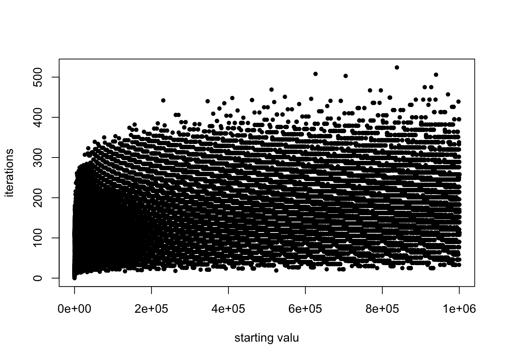

hotpo = function(x) {
count = 0
while (x > 1) {
count = count + 1
if ( (x %% 2)==0) {
## even number
x = x / 2
} else {
## odd, so triple plus one
x = (3*x) + 1
}
}
count
}
hotpo(7)[1] 16The naive implementation works, but is quite slow.
hotpo = function(x) {
count = 0
while (x > 1) {
count = count + 1
if ( (x %% 2)==0) {
## even number
x = x / 2
} else {
## odd, so triple plus one
x = (3*x) + 1
}
}
count
}
hotpo(7)[1] 16x = 1:1e6
res <- sapply(x, hotpo)
plot(res, xlab='starting valu', ylab='iterations',pch=20)
x = 1:1e2
system.time(res <- sapply(x, hotpo)) user system elapsed
0.000 0.000 0.001 sum(res)[1] 3142The RCpp definitions are in the file hotpo.cpp. There are two versions. This first one uses a C implementation for calculating the interations for one initial value of n:
Rcpp::sourceCpp('hotpo.cpp')
system.time(res2 <- sapply(x, hotpo_c)) user system elapsed
0.001 0.000 0.001 sum(res2)[1] 3142The second value also has an outer loop to loop from one to a million:
system.time(res3 <- hotpor_c(1, 1e6)) user system elapsed
0.131 0.001 0.132 sum(res3)[1] 131434424The first version of the Julia implementation is quite straightforward.
function hotpo(x::Int64)
count = 0
while (x > 1)
count = count + 1
if (rem(x, 2)>0)
x = 3x + 1
else
x = x/2
end
end
count
endhotpo (generic function with 1 method)
x = collect(1:1_000_000);
using BenchmarkTools
time1 = @elapsed res1 = map(hotpo, x)1.091382292sum(res1)131434424We use a couple of tricks to speed things up – can you see them?
function hotpo2(x::Int64)
count = 0
while (x > 1)
count = count + 1
if x & 1 == 1
x = 3x + 1
else
x = x >> 1
end
end
count
endhotpo2 (generic function with 1 method)time2 = @elapsed res2 = map(hotpo2, x)0.14531825sum(res2)131434424